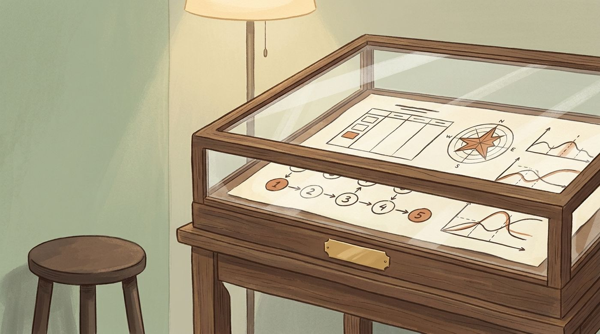
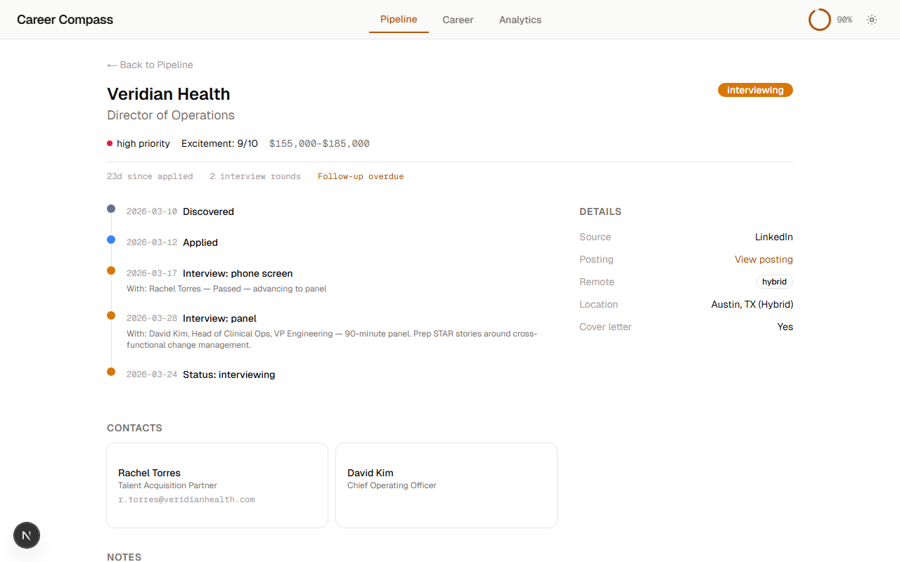

The dashboard looks. Claude does.
A read-only view of the same files Claude reads and writes — redrawn every time you open it. Every button on it hands you the words to ask Claude for the change. Nothing on the page can edit your search; that is the point.

How the dashboard works
Four stations. The important one is the last: the page never writes. Anything you want changed, you say to Claude — and the dashboard hands you the words.
Open it
One command starts a tiny web server on your own computer and opens your browser. It only answers the computer you are sitting at; nothing on your network, and no other website, can reach the page.
It reads the drawer
On every request the page re-reads the pipeline file from disk and renders the whole document fresh. Nothing is cached, nothing is remembered between loads. Refresh the browser and you are looking at the files as they are right now.
You look
Six numbers across the top, a kanban by stage with the closed applications folded away, a next-actions list of what is overdue or due soon, and a stage chart. Click a card and its drawer opens: days in stage, follow-up, posting, contacts, rounds, latest note.
You ask Claude, not the page
Every button, card drawer, and next-action row copies a ready-to-paste prompt for Claude — "give me a full status on my Acme application," "help me with this overdue follow-up." The work happens in the conversation. The page stays read-only.
npx -y career-compass-mcp dashboard --sample
Opens the bundled Alex Rivera demo. Its dates shift to sit around today, and the tools refuse to write into it.

Two flavors — one ships, one is kept
There are two dashboards in the repository. Only one reaches you. The honest version of this page says so, and says why.
One HTML page, no build step
- what One plain web page, drawn fresh from your files each time you load it. It downloads nothing extra and depends on no framework, so it cannot break when something else updates.
- why It arrives with the package and works the moment the package does. Nothing to build, nothing to keep in sync with your data.
- shows KPIs · kanban by stage · card detail drawers · next actions · stage chart · a company/role filter that re-counts the columns · light and dark, following your system.
- does not Edit anything. Move cards. Store state. Talk to the network.
- honesty A pipeline nobody has written to in 30 days says so in a banner. A rate with no denominator shows a dash, not 0%.
A Next.js app, kept as a design reference
- what An earlier, heavier web app for the same files: a board, a detail view with a timeline, a Career KB overview, a first-run wizard, an analytics page. It was built while the product was finding its shape.
- status It never shipped to anyone — it only ever ran from a developer's copy of the source — and in the 2.6 architecture review it was frozen: no new features, kept in the repository as a worked-out design reference. It is not a version being withheld from you.
- why Two dashboards for one folder was one too many. Two independent reviews said the same thing: put every hour of interface work into the one users actually get.
- kept for Its detail-view layout, wizard flow, and analytics designs — to mine when the lite dashboard grows those surfaces, or if a hosted version is ever built.
- unfreeze if Claude renders in-app boards for local servers, or a hosted connector build is pursued. A product decision, recorded so nobody re-derives it.

